Обкладинка 8–17 жовтня
Греція 2026

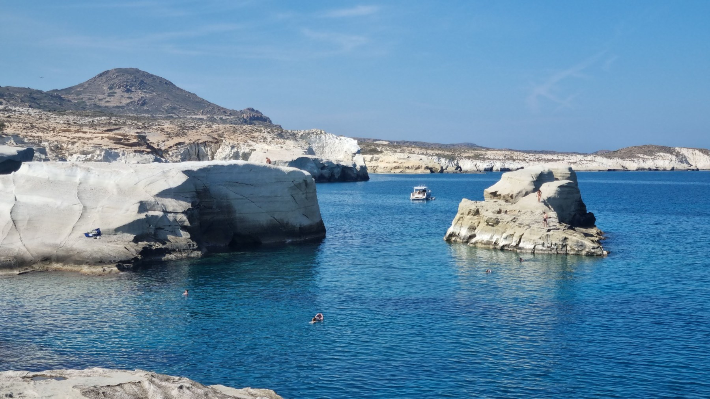
Обкладинка 8–17 жовтня

Афіни 9 жовтня
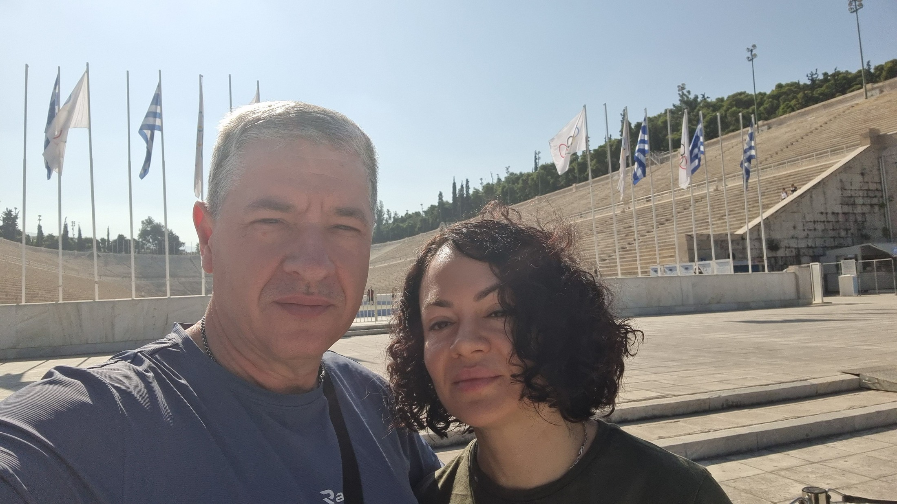
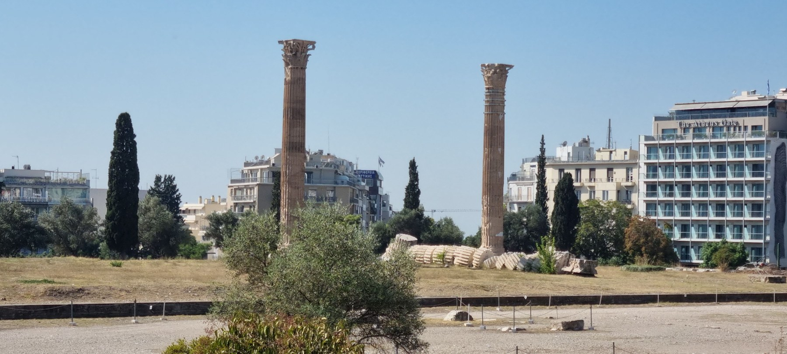
Афіни 9 жовтня
Дорога на Мілос 9 жовтня
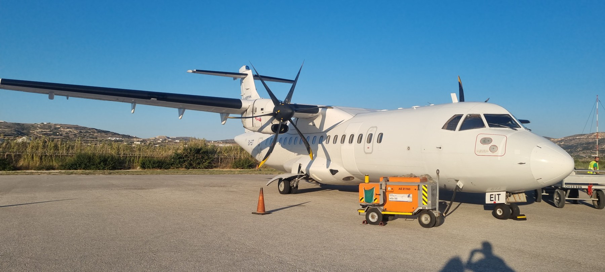
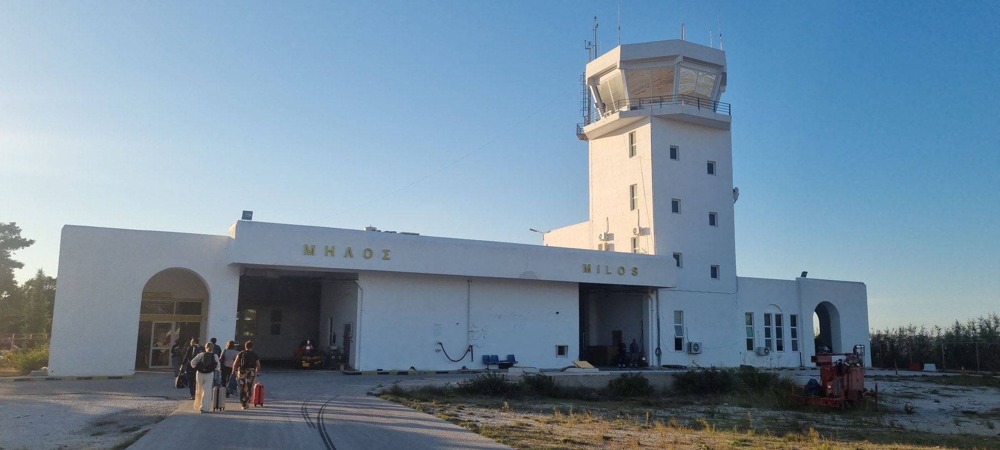
Адамас 9 жовтня
Ранок на Мілосі 10 жовтня
Плака / Кастро 10 жовтня
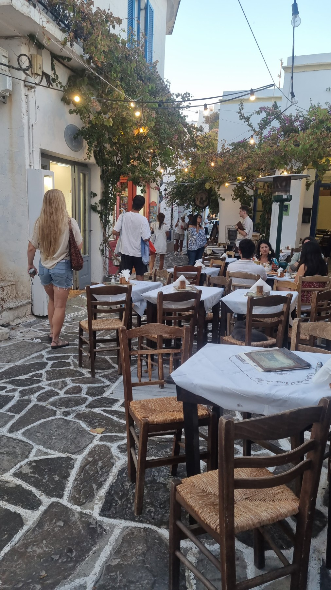
Плака / Кастро 10 жовтня
Плака / Кастро 10 жовтня
Південний берег 11 жовтня
Південний берег 11 жовтня
Адамас 11 жовтня
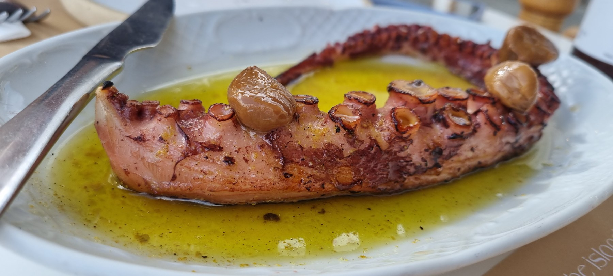
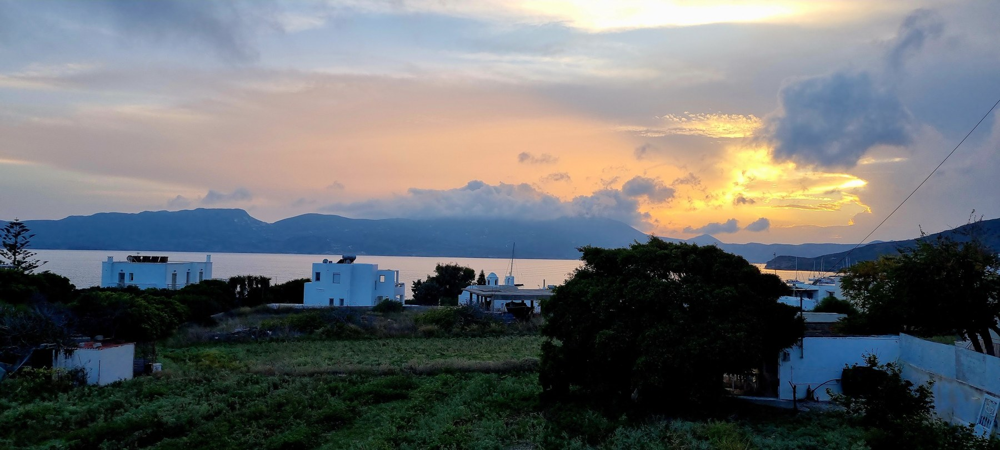
Пляжі й бухти 12 жовтня
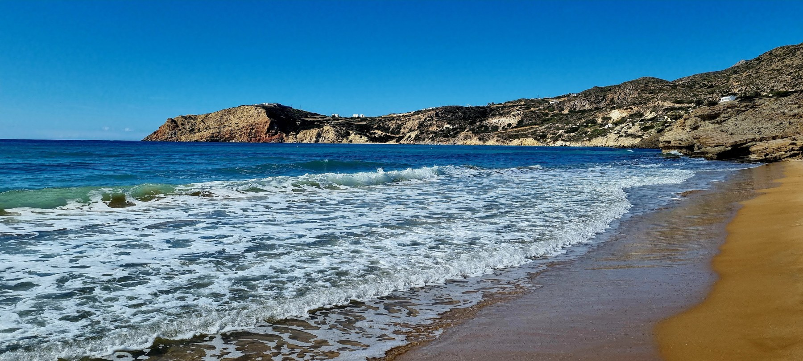
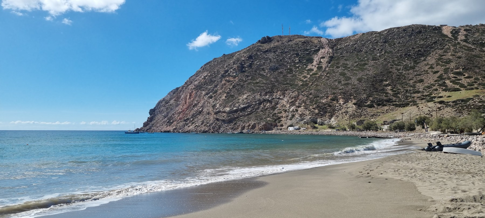
Історичний Мілос 12 жовтня
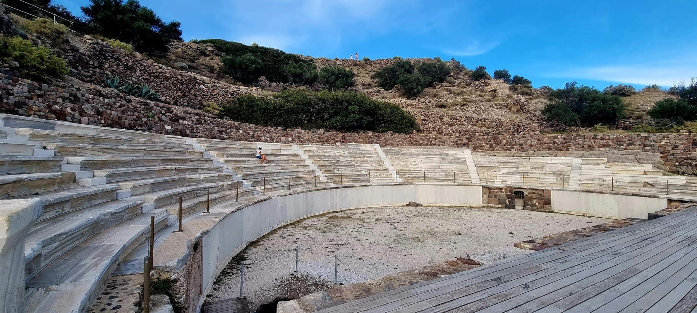
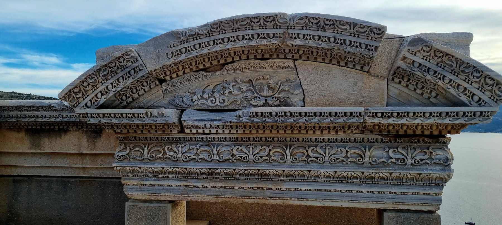
Історія Мілоса 1820 → 1821
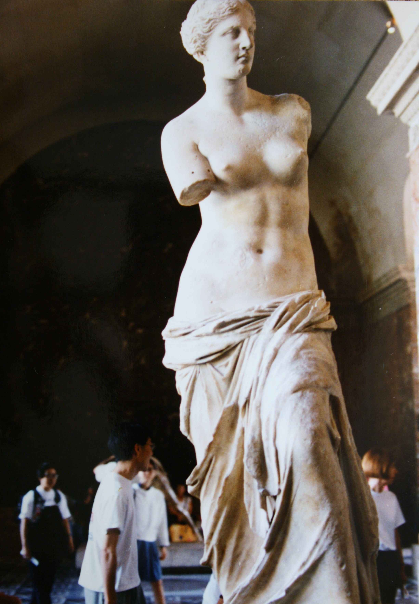
У 1820 році на Мілосі знайшли мармурову Афродіту — майбутню Венеру Мілоську. Її незвична краса стала взірцем елліністичної скульптури, а відсутні руки залишили мистецтвознавцям загадку. Французький посол маркіз де Рів’єр придбав статую, подарував її Людовику XVIII — і 1821 року король передав її Лувру.
Північне узбережжя 13 жовтня
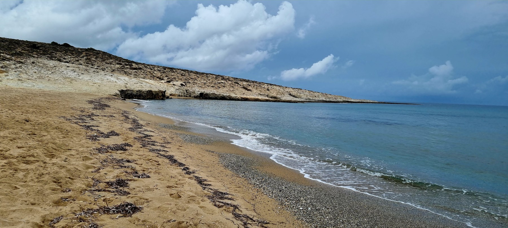
Повернення до Палеохорі 13 жовтня
Селища біля моря 14 жовтня
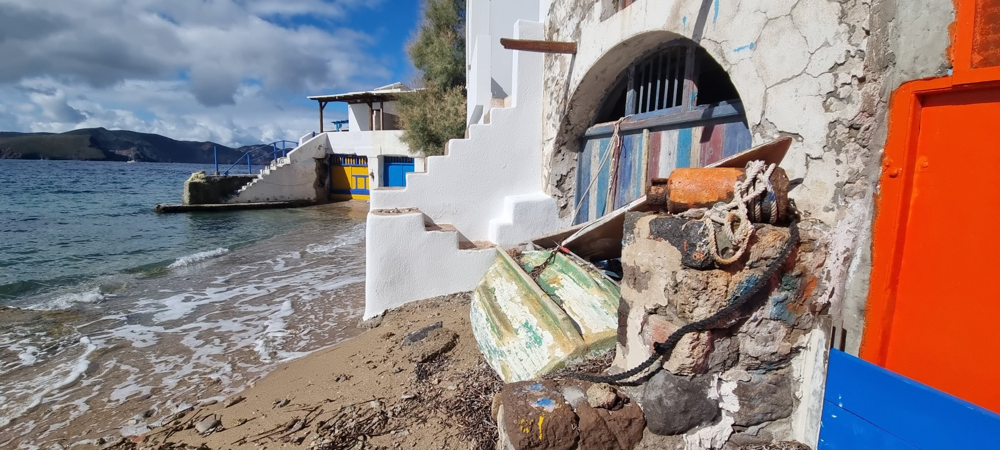
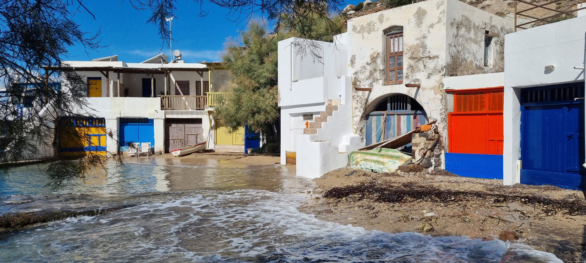
Селища біля моря 14 жовтня
Селища біля моря 14 жовтня
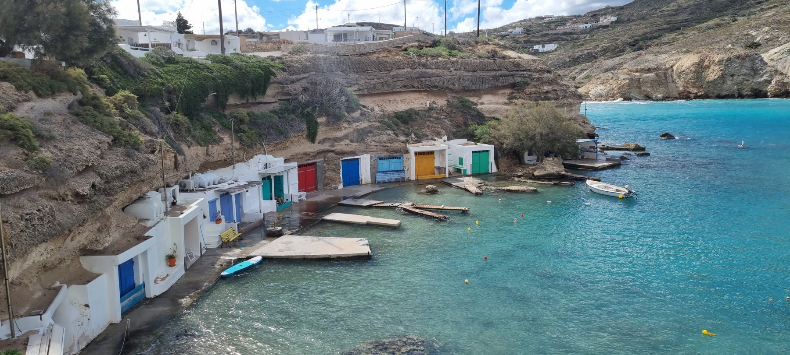
Знову Саракініко 14 жовтня
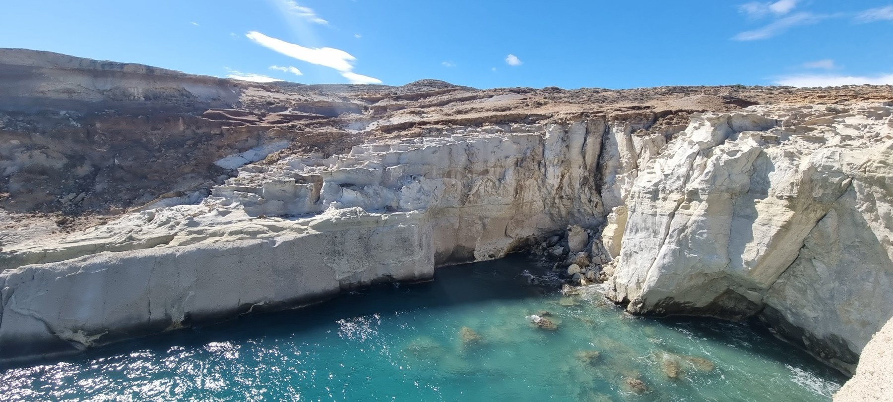
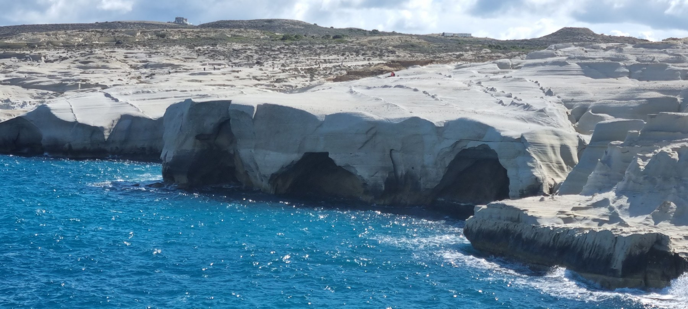
Знову Саракініко 14 жовтня
Природні форми 14 жовтня
Поллонія 14 жовтня
Адамас 14 жовтня
Останній день 16 жовтня
Прощання 16 жовтня
Підсумок подорожі 8–17 жовтня 2026
Відплиття 17 жовтня
Пором і фінал 17 жовтня
ДЕ МИ БУЛИ
Дев’ять місць, до яких хочеться повернутися.
Виберіть номер або назву місця.
Контур і географічні дані: © OpenStreetMap contributors · ODbL. Дані контуру.


.jpg){kind=link}